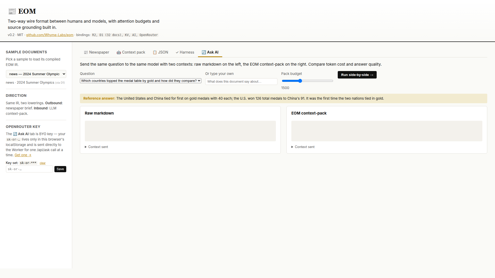
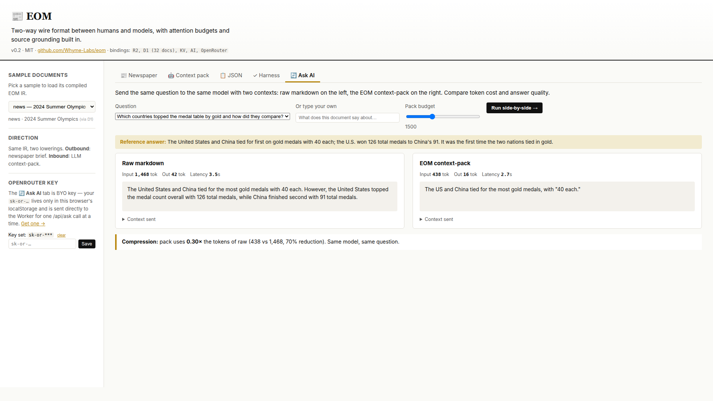

<template id="beat-3-inbound-template">
  <div
    data-composition-id="beat-3-inbound"
    data-width="1920"
    data-height="1080"
    data-start="0"
    data-duration="65"
  >
    <style>
      [data-composition-id="beat-3-inbound"] {
        position: relative;
        width: 1920px;
        height: 1080px;
        background: #fafaf7;
        overflow: hidden;
        font-family:
          -apple-system, BlinkMacSystemFont, "Segoe UI", Inter, sans-serif;
        color: #111111;
      }

      /* ---------------------------------------------------------------
         Phase A — Setup: empty ask-AI tab with Ken Burns + gold pulse
         --------------------------------------------------------------- */
      [data-composition-id="beat-3-inbound"] .b3-demo-empty {
        position: absolute;
        inset: 0;
        width: 1920px;
        height: 1080px;
        overflow: hidden;
        z-index: 1;
      }
      [data-composition-id="beat-3-inbound"] .b3-demo-empty img {
        width: 1920px;
        height: 1080px;
        display: block;
        transform-origin: 50% 50%;
      }
      /* Gold pulse dot — the "Run side-by-side" button sits roughly
         right side of the ask-tab card. Position the dot above-right
         of the button as a decorative attention cue. Coordinates
         tuned to 06-ask-empty.png (1920x1080). */
      [data-composition-id="beat-3-inbound"] .b3-pulse {
        position: absolute;
        /* Above the run button (button is roughly bottom-mid-left of ask-grid). */
        top: 720px;
        left: 1320px;
        width: 32px;
        height: 32px;
        border-radius: 50%;
        background: #b8860b;
        z-index: 4;
        transform-origin: 50% 50%;
        opacity: 0;
        will-change: transform, opacity;
      }

      /* ---------------------------------------------------------------
         Phase B — Result reveal (cross-fade to populated ask-AI)
         --------------------------------------------------------------- */
      [data-composition-id="beat-3-inbound"] .b3-demo-results {
        position: absolute;
        inset: 0;
        width: 1920px;
        height: 1080px;
        overflow: hidden;
        z-index: 2;
        opacity: 0;
      }
      [data-composition-id="beat-3-inbound"] .b3-demo-results img {
        width: 1920px;
        height: 1080px;
        display: block;
      }

      /* ---------------------------------------------------------------
         Phase C — The 0.30× callout
         The dim layer softens the demo image to ~30% by overlaying a
         cream tint at 0.7 opacity (cream over demo = visible softening).
         --------------------------------------------------------------- */
      [data-composition-id="beat-3-inbound"] .b3-dim {
        position: absolute;
        inset: 0;
        width: 1920px;
        height: 1080px;
        background: #fafaf7;
        z-index: 3;
        opacity: 0;
        pointer-events: none;
      }
      [data-composition-id="beat-3-inbound"] .b3-callout {
        position: absolute;
        inset: 0;
        width: 1920px;
        height: 1080px;
        z-index: 4;
        display: flex;
        flex-direction: column;
        align-items: center;
        justify-content: center;
        gap: 28px;
        opacity: 0;
        box-sizing: border-box;
        padding: 120px;
      }
      [data-composition-id="beat-3-inbound"] .b3-callout-big {
        font-family: ui-monospace, "SF Mono", Menlo, monospace;
        font-size: 240px;
        font-weight: 700;
        line-height: 1;
        color: #111111;
        font-variant-numeric: tabular-nums;
        letter-spacing: -0.02em;
      }
      [data-composition-id="beat-3-inbound"] .b3-callout-reduction {
        font-family: Georgia, "Times New Roman", serif;
        font-style: italic;
        font-size: 56px;
        line-height: 1.1;
        color: #5a5a5a;
      }
      [data-composition-id="beat-3-inbound"] .b3-callout-meta {
        font-family: ui-monospace, "SF Mono", Menlo, monospace;
        font-size: 32px;
        color: #5a5a5a;
        font-variant-numeric: tabular-nums;
        letter-spacing: 0.01em;
      }

      /* ---------------------------------------------------------------
         Phase D — Corpus benchmark table
         A full-frame cream panel layered over everything earlier.
         --------------------------------------------------------------- */
      [data-composition-id="beat-3-inbound"] .b3-corpus {
        position: absolute;
        inset: 0;
        width: 1920px;
        height: 1080px;
        z-index: 5;
        background: #fafaf7;
        opacity: 0;
        display: flex;
        flex-direction: column;
        align-items: center;
        justify-content: center;
        padding: 120px;
        gap: 48px;
        box-sizing: border-box;
      }
      [data-composition-id="beat-3-inbound"] .b3-corpus-title {
        font-family: Georgia, "Times New Roman", serif;
        font-size: 44px;
        font-weight: 700;
        color: #111111;
        letter-spacing: 0.01em;
      }
      [data-composition-id="beat-3-inbound"] .b3-corpus-table {
        font-family: ui-monospace, "SF Mono", Menlo, monospace;
        font-size: 32px;
        line-height: 1.6;
        color: #111111;
        font-variant-numeric: tabular-nums;
        border-collapse: collapse;
      }
      [data-composition-id="beat-3-inbound"] .b3-corpus-table th,
      [data-composition-id="beat-3-inbound"] .b3-corpus-table td {
        padding: 10px 36px;
        text-align: right;
      }
      [data-composition-id="beat-3-inbound"] .b3-corpus-table th:first-child,
      [data-composition-id="beat-3-inbound"] .b3-corpus-table td:first-child {
        text-align: left;
      }
      [data-composition-id="beat-3-inbound"] .b3-corpus-table thead th {
        color: #5a5a5a;
        font-weight: 600;
        font-size: 26px;
        padding-bottom: 16px;
        border-bottom: 1px solid #e0ddd5;
        letter-spacing: 0.04em;
      }
      [data-composition-id="beat-3-inbound"] .b3-corpus-table .b3-row {
        opacity: 0;
      }
      [data-composition-id="beat-3-inbound"] .b3-corpus-table .b3-gold {
        color: #b8860b;
        font-weight: 700;
      }
      [data-composition-id="beat-3-inbound"] .b3-corpus-table .b3-rule td {
        padding: 0 36px;
        border-top: 1px solid #e0ddd5;
        height: 1px;
        line-height: 0;
      }
      [data-composition-id="beat-3-inbound"] .b3-corpus-table .b3-total td {
        padding-top: 18px;
        font-weight: 700;
      }
      [data-composition-id="beat-3-inbound"] .b3-corpus-caption {
        font-family: Georgia, "Times New Roman", serif;
        font-style: italic;
        font-size: 28px;
        color: #5a5a5a;
        text-align: center;
        max-width: 1200px;
        opacity: 0;
      }

      /* ---------------------------------------------------------------
         Phase E — Trade-off circles
         --------------------------------------------------------------- */
      [data-composition-id="beat-3-inbound"] .b3-tradeoff {
        position: absolute;
        inset: 0;
        width: 1920px;
        height: 1080px;
        z-index: 6;
        background: #fafaf7;
        opacity: 0;
        display: flex;
        flex-direction: column;
        align-items: center;
        justify-content: center;
        padding: 120px;
        gap: 56px;
        box-sizing: border-box;
      }
      [data-composition-id="beat-3-inbound"] .b3-tradeoff-title {
        font-family: Georgia, "Times New Roman", serif;
        font-size: 40px;
        font-weight: 700;
        color: #111111;
        letter-spacing: 0.01em;
      }
      [data-composition-id="beat-3-inbound"] .b3-grid {
        display: flex;
        flex-direction: column;
        gap: 36px;
      }
      [data-composition-id="beat-3-inbound"] .b3-grid-row {
        display: flex;
        align-items: center;
        gap: 28px;
      }
      [data-composition-id="beat-3-inbound"] .b3-grid-label {
        font-family: ui-monospace, "SF Mono", Menlo, monospace;
        font-size: 24px;
        color: #5a5a5a;
        width: 280px;
        text-align: right;
        font-variant-numeric: tabular-nums;
      }
      [data-composition-id="beat-3-inbound"] .b3-circle {
        width: 64px;
        height: 64px;
        border-radius: 50%;
        opacity: 0;
      }
      [data-composition-id="beat-3-inbound"] .b3-circle.solid {
        background: #b8860b;
      }
      [data-composition-id="beat-3-inbound"] .b3-circle.hollow {
        background: transparent;
        border: 3px solid #b8860b;
        box-sizing: border-box;
      }
      [data-composition-id="beat-3-inbound"] .b3-tradeoff-caption {
        font-family: Georgia, "Times New Roman", serif;
        font-style: italic;
        font-size: 36px;
        color: #111111;
        text-align: center;
        max-width: 1400px;
        line-height: 1.4;
        opacity: 0;
      }
    </style>

    <!-- Phase A: empty ask-AI screenshot + gold pulse dot -->
    <div class="b3-demo-empty">
      
    </div>
    <div class="b3-pulse"></div>

    <!-- Phase B: populated ask-AI screenshot -->
    <div class="b3-demo-results">
      
    </div>

    <!-- Phase C: dim + giant 0.30× callout -->
    <div class="b3-dim"></div>
    <div class="b3-callout">
      <div class="b3-callout-big">0.30&times;</div>
      <div class="b3-callout-reduction">70% reduction</div>
      <div class="b3-callout-meta">438 vs 1,468 tokens</div>
    </div>

    <!-- Phase D: corpus benchmark table -->
    <div class="b3-corpus">
      <div class="b3-corpus-title">Across the benchmark corpus</div>
      <table class="b3-corpus-table">
        <thead>
          <tr>
            <th></th>
            <th>raw</th>
            <th>pack</th>
            <th>&Delta;</th>
          </tr>
        </thead>
        <tbody>
          <tr class="b3-row" data-row="0">
            <td>GDPR</td>
            <td>5,159</td>
            <td>3,239</td>
            <td>-37%</td>
          </tr>
          <tr class="b3-row" data-row="1">
            <td>Paris 2024</td>
            <td>7,488</td>
            <td>2,348</td>
            <td class="b3-gold">-69%</td>
          </tr>
          <tr class="b3-row" data-row="2">
            <td>RFC 9293 (TCP)</td>
            <td>3,485</td>
            <td>2,090</td>
            <td>-40%</td>
          </tr>
          <tr class="b3-row b3-rule" data-row="3">
            <td colspan="4"></td>
          </tr>
          <tr class="b3-row b3-total" data-row="4">
            <td>Total</td>
            <td>16,132</td>
            <td>7,677</td>
            <td class="b3-gold">-52%</td>
          </tr>
        </tbody>
      </table>
      <div class="b3-corpus-caption">
        Editorially lossy by design. Tier-A always survives.
      </div>
    </div>

    <!-- Phase E: trade-off circles -->
    <div class="b3-tradeoff">
      <div class="b3-tradeoff-title">Five questions per document</div>
      <div class="b3-grid">
        <div class="b3-grid-row" data-grid-row="0">
          <div class="b3-grid-label">GDPR</div>
          <div class="b3-circle solid" data-cidx="0"></div>
          <div class="b3-circle solid" data-cidx="1"></div>
          <div class="b3-circle solid" data-cidx="2"></div>
          <div class="b3-circle hollow" data-cidx="3"></div>
          <div class="b3-circle hollow" data-cidx="4"></div>
        </div>
        <div class="b3-grid-row" data-grid-row="1">
          <div class="b3-grid-label">Paris 2024</div>
          <div class="b3-circle solid" data-cidx="5"></div>
          <div class="b3-circle solid" data-cidx="6"></div>
          <div class="b3-circle solid" data-cidx="7"></div>
          <div class="b3-circle hollow" data-cidx="8"></div>
          <div class="b3-circle hollow" data-cidx="9"></div>
        </div>
        <div class="b3-grid-row" data-grid-row="2">
          <div class="b3-grid-label">RFC 9293</div>
          <div class="b3-circle solid" data-cidx="10"></div>
          <div class="b3-circle solid" data-cidx="11"></div>
          <div class="b3-circle solid" data-cidx="12"></div>
          <div class="b3-circle hollow" data-cidx="13"></div>
          <div class="b3-circle hollow" data-cidx="14"></div>
        </div>
      </div>
      <div class="b3-tradeoff-caption">
        High-salience preserved. Tail detail demoted by priority, not by accident.
      </div>
    </div>

    <script src="https://cdn.jsdelivr.net/npm/gsap@3.14.2/dist/gsap.min.js"></script>
    <script>
      window.__timelines = window.__timelines || {};
      const tl = gsap.timeline({ paused: true });
      const scope = '[data-composition-id="beat-3-inbound"]';

      /* ===============================================================
         Phase A — Setup (0.0 - 6.0s)
         =============================================================== */
      // Empty ask-AI fades in from cream.
      tl.fromTo(
        scope + " .b3-demo-empty",
        { opacity: 0 },
        { opacity: 1, duration: 0.6, ease: "power2.out" },
        0.0,
      );
      // Subtle Ken Burns (scale 1.00 -> 1.02 across 6s) on the inner .
      tl.fromTo(
        scope + " .b3-demo-empty img",
        { scale: 1.0 },
        { scale: 1.02, duration: 6.0, ease: "none" },
        0.0,
      );

      // Gold pulse dot — finite yoyo (repeat:3) starting at t=3.0.
      // Show it via opacity entrance, then run a single scale tween with
      // yoyo+repeat. Two separate tweens on different properties is fine.
      tl.fromTo(
        scope + " .b3-pulse",
        { opacity: 0 },
        { opacity: 1, duration: 0.3, ease: "power2.out" },
        3.0,
      );
      tl.fromTo(
        scope + " .b3-pulse",
        { scale: 1.0 },
        {
          scale: 1.4,
          duration: 0.6,
          ease: "sine.inOut",
          yoyo: true,
          repeat: 5, // 3 full pulses = 6 half-cycles
        },
        3.0,
      );

      /* ===============================================================
         Phase B — Result reveal (6.0 - 10.0s)
         Cross-fade onto populated ask-AI, hold 2s.
         =============================================================== */
      tl.fromTo(
        scope + " .b3-demo-results",
        { opacity: 0 },
        { opacity: 1, duration: 1.2, ease: "power2.inOut" },
        6.0,
      );

      /* ===============================================================
         Phase C — The 0.30× callout (10.0 - 25.0s)
         Dim demo via cream overlay, then big callout rises from below.
         =============================================================== */
      // Dim layer fades in over 0.6s to 0.7 opacity (softens demo to ~30%).
      tl.fromTo(
        scope + " .b3-dim",
        { opacity: 0 },
        { opacity: 0.7, duration: 0.6, ease: "power2.inOut" },
        10.0,
      );

      // Callout group: parent opacity entrance, then child slide-up on big number.
      tl.fromTo(
        scope + " .b3-callout",
        { opacity: 0 },
        { opacity: 1, duration: 0.5, ease: "power2.out" },
        10.4,
      );
      // Big 0.30× number rises and scales — single transform tween.
      tl.fromTo(
        scope + " .b3-callout-big",
        { y: 200, scale: 0.6 },
        { y: 0, scale: 1.0, duration: 1.0, ease: "power3.out" },
        10.5,
      );
      // Reduction and meta slide-in with stagger (separate elements).
      tl.fromTo(
        scope + " .b3-callout-reduction",
        { y: 40, opacity: 0 },
        { y: 0, opacity: 1, duration: 0.6, ease: "expo.out" },
        11.1,
      );
      tl.fromTo(
        scope + " .b3-callout-meta",
        { y: 30, opacity: 0 },
        { y: 0, opacity: 1, duration: 0.5, ease: "power2.out" },
        11.4,
      );

      /* ===============================================================
         Phase D — Corpus benchmark table (25.0 - 45.0s)
         Full-frame cream panel layered above earlier content (z:5).
         The callout below stays — corpus panel covers it.
         =============================================================== */
      tl.fromTo(
        scope + " .b3-corpus",
        { opacity: 0 },
        { opacity: 1, duration: 0.6, ease: "power2.inOut" },
        25.0,
      );
      // Title slides in.
      tl.fromTo(
        scope + " .b3-corpus-title",
        { y: 30, opacity: 0 },
        { y: 0, opacity: 1, duration: 0.6, ease: "power3.out" },
        25.4,
      );
      // Table rows fade-in stagger 0.15s each, starting at 26.2s.
      // Row order: GDPR, Paris, RFC, rule, total. Use separate tweens
      // so each row has its own (opacity, y) entrance.
      const rowTimes = [26.2, 26.35, 26.5, 26.65, 26.9];
      rowTimes.forEach((t, i) => {
        tl.fromTo(
          scope + ' .b3-row[data-row="' + i + '"]',
          { opacity: 0, y: 16 },
          { opacity: 1, y: 0, duration: 0.5, ease: "power2.out" },
          t,
        );
      });
      // Caption fades in last.
      tl.fromTo(
        scope + " .b3-corpus-caption",
        { y: 20, opacity: 0 },
        { y: 0, opacity: 1, duration: 0.7, ease: "power3.out" },
        28.2,
      );

      /* ===============================================================
         Phase E — Trade-off circles (45.0 - 65.0s)
         Cream panel above corpus table. 15 circles stagger in.
         =============================================================== */
      tl.fromTo(
        scope + " .b3-tradeoff",
        { opacity: 0 },
        { opacity: 1, duration: 0.6, ease: "power2.inOut" },
        45.0,
      );
      tl.fromTo(
        scope + " .b3-tradeoff-title",
        { y: 30, opacity: 0 },
        { y: 0, opacity: 1, duration: 0.6, ease: "power3.out" },
        45.4,
      );
      // 15 circles enter from y:30, opacity:0 with 80ms stagger.
      for (let i = 0; i < 15; i++) {
        tl.fromTo(
          scope + ' .b3-circle[data-cidx="' + i + '"]',
          { opacity: 0, y: 30 },
          { opacity: 1, y: 0, duration: 0.45, ease: "power2.out" },
          46.0 + i * 0.08,
        );
      }
      // Caption fades in after all circles settled.
      tl.fromTo(
        scope + " .b3-tradeoff-caption",
        { y: 24, opacity: 0 },
        { y: 0, opacity: 1, duration: 0.8, ease: "power3.out" },
        48.4,
      );

      window.__timelines["beat-3-inbound"] = tl;
    </script>
  </div>
</template>
